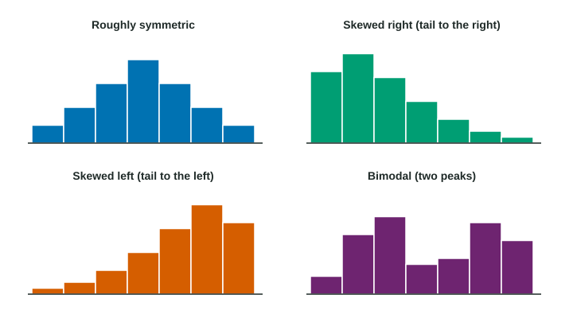

Descriptions for One Quantitative Variable Distributions
To describe a quantitative distribution, give its shape (symmetric, skewed toward the tail, unimodal, bimodal or uniform), its center and spread with numbers, and any unusual features such as outliers, gaps and clusters.
Part 1 · Hook
Why this matters
Part 2 · Before you start
What this builds on
Part 3 · Prerequisite check
Quick check before you start
1. In a histogram with bins 0 to 5, 5 to 10 and so on (left end included), where does a value of 10 go?
- In the 10 to 15 bin
- In the 5 to 10 bin
- In both bins
- In neither bin
Show the answer
Each bin holds its left end, so 10 starts the 10 to 15 bin.
- Correct: In the 10 to 15 bin:
- In the 5 to 10 bin:
- In both bins:
- In neither bin:
2. What does a histogram show that a list of values does not show at a glance?
- How the values are spread along the number line
- The exact value of each observation
- The order the data were collected
- The name of each individual
Show the answer
A histogram shows the distribution: how many values fall in each part of the number line.
- Correct: How the values are spread along the number line:
- The exact value of each observation:
- The order the data were collected:
- The name of each individual:
Part 4 · See it
See it first

Part 5 · Step by step
How it works, step by step
- A graph shows where the values of a quantitative variable fallyou can read its shape: symmetric, skewed, one peak or two, or level
- A tail stretches toward one sidethe distribution is skewed toward the tail: right for large values, left for small values
- Values bunch around a typical value and reach out from ityou describe the center and the spread with numbers
- Some values stand apart, with empty space around themyou name them as gaps, clusters or possible outliers, and every feature is stated in context
Part 6 · Key ideas
Key ideas
- Describe a quantitative distribution with four features: shape, center, spread and unusual features, all in context with numbers.
- Shape: symmetric, skewed right or left (named for the long tail), unimodal or bimodal, or uniform (bars about level).
- Spread (variability) is how far apart the values are; give it with numbers, such as "most values from 5 to 30 minutes".
- Unusual features: an outlier falls far from the overall pattern; a gap is an empty stretch; a cluster is a separate bunch of values.
Part 7 · Misconception
A common mistake
The wrong idea: Most commute times are on the left, so the distribution is skewed left.
What actually happens: Skew is named for the tail, not the bulk. The long tail stretches toward the larger values on the right, so the distribution is skewed right.
Part 8 · Check yourself
Check yourself
Exam-style questions. Anything you miss goes into your review queue.
Graph
Commute times of 60 workers
1. What is the shape of the distribution of commute times?
- Skewed left
- Skewed right
- Roughly symmetric
- Uniform
Show the answer
The tail stretches toward the larger values, so the distribution is skewed right (toward the tail).
- Skewed left: Skew is named for the tail, not the peak. The long tail here points right.
- Correct: Skewed right: Right: most times are short, and the bars trail off in a long tail toward the longer times on the right.
- Roughly symmetric: There is one peak, but the right side stretches much farther than the left, so the shape is not symmetric.
- Uniform: A uniform shape has bars of about equal height; these rise and then fall away.
2. Which unusual feature does the histogram show?
- A second peak between 30 and 35 minutes, making it bimodal
- A cluster of commutes below 5 minutes that stands apart
- No unusual features, as the bars decrease steadily
- A gap from 45 to 65 minutes, then one commute between 65 and 70
Show the answer
The empty bins from 45 to 65 minutes form a gap, and the lone commute between 65 and 70 is a possible outlier.
- A second peak between 30 and 35 minutes, making it bimodal: The bars fall steadily from 10 to 45 minutes; there is no second peak.
- A cluster of commutes below 5 minutes that stands apart: The bar from 0 to 5 joins the rest of the data; it does not stand apart.
- No unusual features, as the bars decrease steadily: The empty bins from 45 to 65 and the lone bar after them stand out.
- Correct: A gap from 45 to 65 minutes, then one commute between 65 and 70: Right: one worker’s commute sits far from the rest, so it is a possible outlier.
3. About where is the center of the distribution, the value with half the commutes below it?
- Between 15 and 20 minutes
- Between 10 and 15 minutes
- About 35 minutes
- Between 20 and 25 minutes
Show the answer
Count from the left: commutes under 15 minutes and under 20. The middle (the 30th and 31st values) is in the 15 to 20 bin.
- Correct: Between 15 and 20 minutes: Right: 27 commutes are under 15 minutes and 38 are under 20, so the 30th and 31st values fall in the 15 to 20 bin.
- Between 10 and 15 minutes: The tallest bar is the most common bin, not the middle of the data.
- About 35 minutes: Halfway along the axis is not the middle of the data; the commutes bunch at the low end.
- Between 20 and 25 minutes: By 20 minutes, 38 of the 60 commutes have already been counted, more than half.
4. Which description of the distribution is the most complete?
- The distribution is skewed right with a center between 15 and 20 and an outlier between 65 and 70; most of the values are from 5 to 30, so the spread is large
- The commute times of the 60 workers are skewed to the right, which tells us that most of the hospital’s workers live a short drive from work
- The distribution of commute times is skewed right with a center between 15 and 20 minutes; most commutes take 5 to 30 minutes, with a gap and one possible outlier between 65 and 70 minutes
- The histogram of commute times has a tallest bar from 10 to 15 minutes and a shortest bar from 40 to 45 minutes, with many bars between them
Show the answer
A full description covers shape, center, spread and unusual features, each with numbers, and names the variable in context.
- The distribution is skewed right with a center between 15 and 20 and an outlier between 65 and 70; most of the values are from 5 to 30, so the spread is large: It has numbers but no context: it never says these are commute times in minutes.
- The commute times of the 60 workers are skewed to the right, which tells us that most of the hospital’s workers live a short drive from work: It gives shape and context but no center, spread or unusual features, and it adds a claim the data do not show.
- Correct: The distribution of commute times is skewed right with a center between 15 and 20 minutes; most commutes take 5 to 30 minutes, with a gap and one possible outlier between 65 and 70 minutes: Right: it gives shape, center, spread and unusual features, all in context with numbers.
- The histogram of commute times has a tallest bar from 10 to 15 minutes and a shortest bar from 40 to 45 minutes, with many bars between them: It reads bars instead of describing shape, center and spread.
5. Scores on an easy quiz: most students score 9 or 10 out of 10, and a few score much lower. What shape is the distribution?
- Skewed left
- Skewed right
- Roughly symmetric
- Uniform
Show the answer
A tail toward the low values makes the distribution skewed left. Name the skew for the tail, not for where most values are.
- Correct: Skewed left: Right: the few low scores form a tail toward the smaller values, on the left.
- Skewed right: Skew is named for the tail. The tail points to the low scores, so the skew is left.
- Roughly symmetric: Scores cannot go above 10, so the low tail has no match on the right.
- Uniform: Possible values are not the same as how often they occur; most scores pile up at 9 and 10.
6. A student writes, "The distribution is roughly symmetric, centered at 72, with values from 60 to 85." What is missing for full credit?
- Context: what was measured, and its units
- The value of each observation in the data
- A statement that the data are skewed
- A second center, since a description needs two
Show the answer
Shape, center and spread are there, but without context the description could be about anything. Name the variable and units.
- Correct: Context: what was measured, and its units: Right: the description never says what the numbers are, such as heart rates in beats per minute.
- The value of each observation in the data: A description summarizes; listing every value is not needed.
- A statement that the data are skewed: The student described the shape as roughly symmetric, which can be correct.
- A second center, since a description needs two: One center is enough for a unimodal distribution.
Part 9 · Summary
Summary
Part 10 · Up next
What comes next
Part 11 · Connections